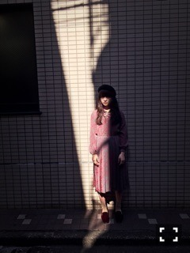

| 2016/03 30 Wed | て、いたい。706回目 |

ぴあ ジャズワンダーランド
に登場しています。
「TOKYOで出会う！乃木坂46伊藤万理華のJazz Study」
ジャズバー、レコードショップ、
ジャズ喫茶を巡りました。
バーはコーヒーが美味しくて、
朝昼夜、それぞれに合わせた
ジャズミュージックを
聴かせていただきました！
レコードショップは
ジャズを掛け合わせた
いろんな音楽がたくさん！
ムーディーなジャズ喫茶では
生演奏を聴きながら
伊勢海老を食しました。おっとなー
とっても楽しかった〜
幼い頃、家族の車内音楽は
いつも上原ひろみさん。
今回の取材でより興味を持ちました！
ジャケ写のパロディーも
なかなかいい感じ？
少しずつ大人の階段を登っています、、

この服装、ジャズの雰囲気に
ぴったりはまって満足∠( 'ω')／
広島キャンペーン告知！
広島FM
「5COLORS」
3月31日（木）18時15分〜18時30分
3月26日（土）に広島アルパークで行った公開録音の模様をオンエア！
フリーペーパー
「Tabi Sche 5月号 vol.56」
4月25日発行
表紙インタビュー掲載
広島ホームテレビ
「H♪LINE」
4月9日25時45分〜放送
FMはつかいち
「昼はまるごと！761」
3月30日12時〜16時内で20分程度のオンエア
広島県民の皆様よろしくお願いします
へ！！この人目が笑ってない！
明日はZIP!春フェス.2016
腹筋の図
どや

どやああああ！！！！
まりか
コメント(447)
2016/03/30 15:06